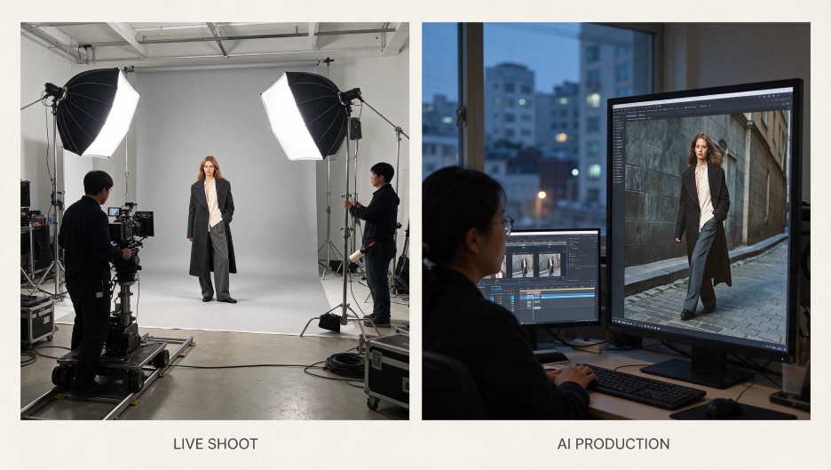
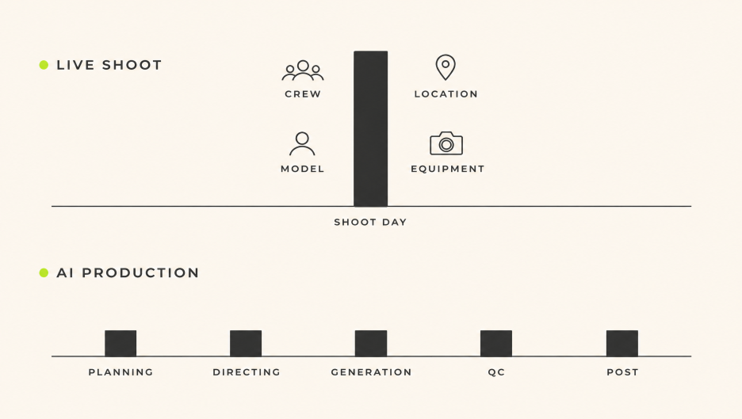
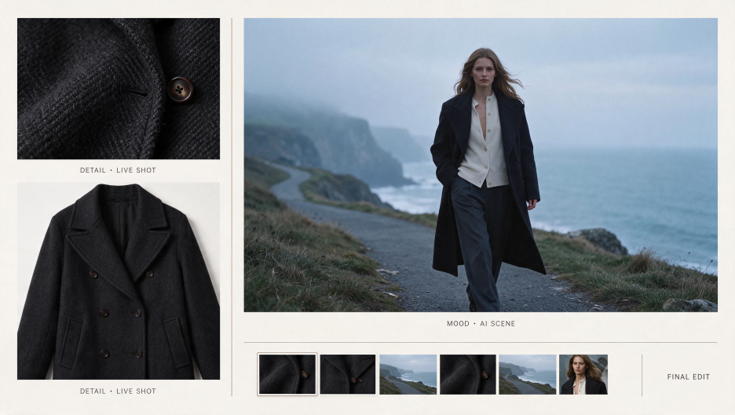

AI 광고 영상 제작, 실사 촬영과 무엇이 다를까? 비용 구조·기간 비교
글 Kris W (감우식) ·
AI 광고 영상 제작과 실사 촬영의 비용 구조·기간·수정 범위를 비교합니다. 제품 물성과 착용감, 로케이션과 모델, 행사·브랜드 캠페인의 목적에 맞는 선택 기준을 확인하세요.

"촬영 견적을 받아 봤는데 예산이 빠듯합니다. AI로 하면 얼마나 줄어들고, 기간은 얼마나 걸리나요?"
신제품 출시나 시즌 캠페인을 앞둔 브랜드 담당자가 가장 많이 하는 질문입니다. 결론부터 정리하면 다음과 같습니다.
AI 광고 영상은 촬영 대비 무조건 싼 방식이 아니라, 비용이 발생하는 구조가 다른 방식입니다.
제품의 실제 물성과 착용감이 핵심이면 실사 촬영이, 장소·계절·착장 수의 제약을 넘어야 하면 AI 제작이 유리합니다.
제작 기간은 일반적으로 30초 이내 영상 약 2주, 1~2분 영상 약 3주이며, 기획 범위와 피드백 일정에 따라 달라집니다.
이 글에서는 패션뿐 아니라 뷰티, 라이프스타일, 행사 영상까지 포함해 두 방식을 고르는 기준을 정리했습니다.
한눈에 보는 실사 촬영 vs AI 광고 영상
| 구분 | 실사 촬영 | AI 광고 영상 |
|---|---|---|
| 비용 발생 구조 | 스태프·대관·모델 섭외·장비가 촬영일에 집중 | 디렉팅·장면 생성·검수·후반 작업으로 공정 전체에 분산 |
| 제작 기간 | 섭외·대관·날씨 일정에 좌우 | 30초 이내 약 2주, 1~2분 약 3주 기준 |
| 로케이션·모델 제약 | 섭외 가능한 장소·인물·계절에 한정 | 해외·가상 공간, 계절 무관, 브랜드에 맞는 인상 설계 |
| 수정 유연성 | 촬영 후 변경은 재촬영 필요 | 단계별 시안 수정 가능, 확정 후 큰 변경은 재작업 |
| 추천 활용처 | 제품 물성·실착·사용 장면, 앰배서더 영상 | 시즌 캠페인, 브랜드 필름, 행사 오프닝, SNS A/B 소재 |
두 방식을 비교할 때 가장 흔한 실수는 '최종 견적 금액'만 나란히 놓는 것입니다. 같은 30초 영상이라도 착장 수, 장면 수, 로케이션, 납품 버전 수가 다르면 비교가 되지 않습니다. 견적을 비교할 때는 같은 조건을 기준으로 놓고 보는 것이 정확합니다.
비용은 '얼마'보다 '어디서' 생기는지를 봐야 합니다
실사 촬영의 비용은 촬영 당일에 모입니다. 감독과 촬영·조명 스태프, 스튜디오나 로케이션 대관, 모델 섭외와 헤어·메이크업, 장비 운송이 하루에 함께 움직이기 때문입니다. 그래서 촬영일이 하루 늘거나 장소가 하나 추가되면 비용이 크게 달라집니다.
AI 광고 영상의 비용은 공정 전체에 나뉘어 있습니다. 브랜드 분석과 기획, 장면 설계, 이미지·영상 생성, 디테일 검수, 편집과 사운드 같은 후반 작업이 각각의 비중을 가집니다. 대신 장소가 바뀌거나 착장이 늘어도 대관·이동 비용처럼 '물리적으로' 늘어나는 항목은 없습니다.
비유하면 실사 촬영은 하루를 빌려 모든 것을 담는 '현장 공연'이고, AI 제작은 장면을 하나씩 쌓아 완성하는 '스튜디오 녹음'에 가깝습니다. 어느 쪽이 더 싸다기보다, 우리 캠페인이 어느 방식의 비용 구조와 잘 맞는지가 핵심입니다.

실사 촬영을 선택해야 할 때
제품의 물성이 구매를 결정할 때
니트의 짜임, 실크의 광택, 크림 제형이 손등에 퍼지는 질감처럼 화면에서 실제 물성을 확인해야 하는 제품은 실사 촬영이 정확합니다.
실제 착용감과 사용 장면이 핵심일 때
운동 중 늘어나는 레깅스, 립 제품을 실제로 바른 발색처럼 '진짜로 써 본 모습'이 설득 포인트라면 촬영이 맞습니다.
특정 인물이 등장해야 할 때
브랜드 앰배서더나 실제 고객 인터뷰처럼 특정 인물이 필요한 영상은 촬영이 기본입니다.
AI 광고 영상이 유리할 때
해외 로케이션이나 현실에 없는 공간이 필요할 때
유럽 골목, 사막, 겨울 바다처럼 가기 어렵거나 존재하지 않는 공간도 일정과 이동 부담 없이 연출할 수 있습니다.
착장이나 제품 수가 많을 때
여러 착장, 여러 컬러웨이를 하나의 캠페인 톤으로 묶어야 할 때 촬영일을 늘리지 않고 장면을 추가할 수 있습니다.
계절과 시간에 묶이지 않아야 할 때
한겨울에 S/S 캠페인을, 한여름에 홀리데이 영상을 준비해야 하는 일정에서 특히 유리합니다.
여러 버전을 빠르게 비교해야 할 때
같은 제품을 다른 공간·조명·무드로 만든 시안을 비교하며 방향을 정하거나, SNS 광고용 A/B 테스트 소재를 여러 개 준비할 때 효과적입니다.
행사 오프닝과 공간 영상이 필요할 때
팝업스토어 사이니지, 런칭 행사 오프닝, 뷰티 브랜드의 매장 미디어월처럼 화면 규격과 공간에 맞춘 연출이 필요한 영상에도 활용도가 높습니다.
제품을 '증명'해야 하면 촬영, 브랜드의 '세계'를 보여줘야 하면 AI가 유리합니다.
두 방식을 함께 쓰는 경우도 많습니다. 제품 디테일 컷은 실사로 확보하고, 캠페인 오프닝과 무드 장면은 AI로 연출하는 방식입니다. 장면별로 어떤 방식이 맞는지는 그레이디랩 홈페이지의 작업 사례에서도 확인하실 수 있습니다.

AI 영상 제작 업체를 고를 때 확인할 3가지
AI 영상 툴은 누구나 쓸 수 있게 되었습니다. 그래서 업체를 고를 때는 '어떤 툴을 쓰는지'보다 '상업용 결과물을 어떤 기준으로 만드는지'를 봐야 합니다.
① 디렉팅이 있는가
브랜드의 포지션과 타깃을 먼저 분석하고, 그에 맞춰 모델 인상·공간·카메라 움직임을 설계하는지 확인하세요. 프롬프트만 바꿔 여러 장을 뽑는 방식과는 결과의 일관성이 다릅니다.
② 장면 간 일관성을 관리하는가
여러 장면에서 같은 모델의 얼굴과 같은 제품의 디테일이 유지되는지, 그 기준을 영상 생성 전에 확인할 수 있는지 물어보세요. 기준 이미지 없이 바로 영상부터 만드는 업체라면 수정이 길어질 수 있습니다.
③ 상업적 납품 기준이 명확한가
납품 해상도와 화면 비율, 매체별 버전, 수정 횟수, 사용 범위가 제작 전에 정리되는지 확인하세요. 특히 광고 집행용이라면 사용 기간과 매체, 권리 범위를 계약 단계에서 명시하는 것이 안전합니다.
그레이디랩은 이렇게 작업합니다
그레이디랩(GRaY D. Lab)은 AI 패션·광고·브랜드 영상을 제작하는 전문 스튜디오입니다. 패션 브랜드 디렉팅과 MD 기획 경험을 바탕으로, 기획 전에 브랜드의 포지션과 타깃을 먼저 분석한 뒤 장면을 설계합니다.
작업은 상담·브랜드 분석 → 기획·스토리보드 → 모델·제품 기준 이미지 → 키이미지·영상 생성 → 편집·납품의 5단계로 진행되며, 단계마다 결과를 확인하고 다음으로 넘어갑니다. 음악과 효과음 등 사운드 작업도 기본 범위에 포함됩니다.
자주 묻는 질문
AI 광고 영상 제작 기간은 얼마나 걸리나요?
일반적으로 30초 이내 영상은 약 2주, 1~2분 영상은 약 3주를 기준으로 합니다. 기획 범위, 장면 수, 자료 준비와 피드백 일정에 따라 달라지며 구체적인 납품일은 상담 후 확정합니다. 행사 영상이라면 오픈일이 아니라 현장 송출 테스트일을 기준으로 일정을 잡습니다.
실물 제품이나 의상의 디테일도 그대로 구현되나요?
제공된 자료에서 확인할 수 있는 범위까지는 기준 이미지를 만들어 실제 제품과 대조하며 구현합니다. 다만 AI는 사진에 없는 각도를 추정해 채우기 때문에, 영상에 필요한 각도의 사진이 있어야 정확해집니다. 로고나 패턴처럼 끝까지 정확해야 하는 디테일이 있다면 미리 알려주시면 검수 기준에 반영합니다.
상업적 사용이나 저작권 문제는 없나요?
납품물의 사용 범위와 권리 귀속은 계약서에 명시합니다. 제작 과정에서는 상업적 이용이 허용된 도구를 사용하고, 실존 인물이나 타 브랜드의 디자인·로고와 유사한 결과물이 나오지 않도록 검수합니다. AI 생성물의 권리와 AI 사용 표시에 관한 기준은 국가와 매체, 플랫폼 정책에 따라 달라질 수 있어, 광고 집행 매체가 정해지면 해당 기준에 맞춰 함께 확인합니다.
촬영 견적이 이미 있는데 비교 상담도 가능한가요?
가능합니다. 받아 두신 촬영 견적이나 기획안을 보내주시면 어떤 장면은 촬영이 맞고, 어떤 장면은 AI로 대체하거나 보완할 수 있는지 장면 단위로 비교해 드립니다.
실사 촬영과 AI 광고 영상은 경쟁 관계라기보다, 캠페인의 목적에 따라 나눠 쓰는 두 개의 도구에 가깝습니다. 무엇을 보여주고 싶은지, 어디에 쓸 영상인지만 정해지면 어느 방식이 맞는지는 생각보다 빨리 보입니다.
AI 광고 영상이나 AI 브랜드 필름을 검토 중이라면 그레이디랩의 포트폴리오를 먼저 둘러보셔도 좋습니다.
글 · Kris W (감우식)
GRaY D. Lab 대표 | 한국AI크리에이터협회 패션분과장
그레이디랩(GRaY D. Lab)은 AI 패션·광고 영상을 제작하는 스튜디오입니다. 기획·스토리보드·AI 비주얼 생성·편집·마스터링까지 직접 수행합니다.